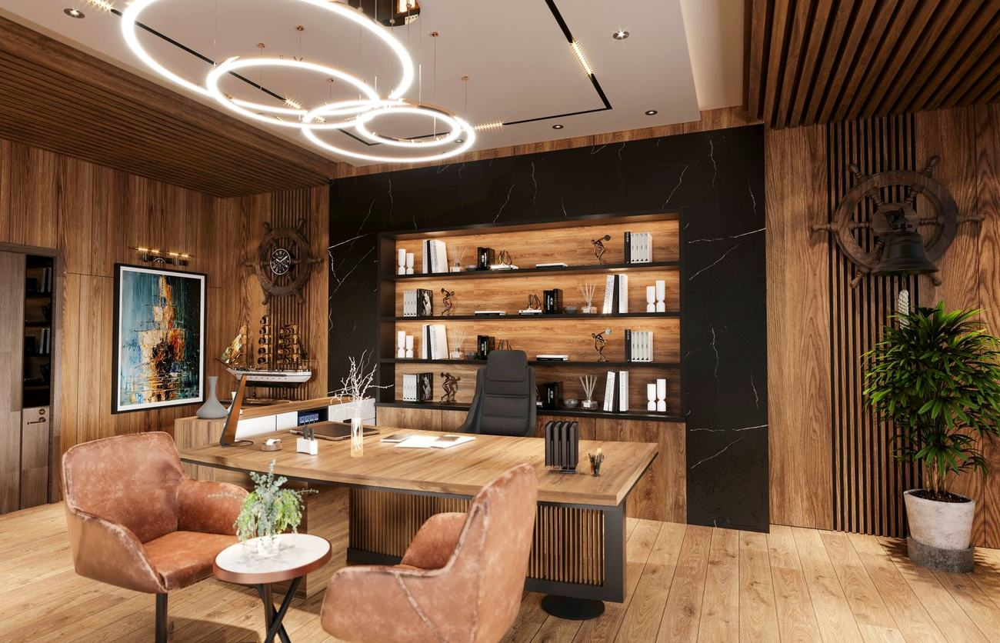

RP
Dr. Rafael Prado
OAB/BA 00.000
Trabalhista e previdenciário. Atua há 15 anos na região sudoeste da Bahia.
Advocacia em Jequié
Atuamos em direito trabalhista, previdenciário, civil e empresarial. Nosso compromisso é com a análise honesta do seu caso — inclusive quando a resposta é não.
Atuação
Cada área tem um responsável direto. Você não fala com atendente — fala com o advogado que vai cuidar do seu processo.
Rescisão, horas extras, assédio, acidente de trabalho e defesa de empresas em ações trabalhistas.
Aposentadoria, auxílio-doença, BPC/LOAS, pensão por morte e revisão de benefício do INSS.
Contratos, inventário, divórcio, guarda, pensão alimentícia e ações de indenização.
Constituição de empresa, contratos societários, recuperação de crédito e consultoria preventiva.

A equipe
Trabalhista e previdenciário. Atua há 15 anos na região sudoeste da Bahia.
Civil e empresarial. Especialista em contratos e direito de família.
Conteúdo
Textos curtos, em linguagem simples, sobre os assuntos que mais aparecem no escritório.
O prazo para recorrer é de 30 dias. Entenda o que fazer e quais documentos reúnem as chances de reversão.
Aviso prévio, 13º proporcional, férias, FGTS e multa de 40%. A lista completa, sem juridiquês.
Os prazos reais, a diferença entre inventário judicial e extrajudicial, e como evitar gastos desnecessários.
Conte o que aconteceu. Se não houver fundamento, dizemos com clareza — e você não gasta com uma ação que não vai prosperar.